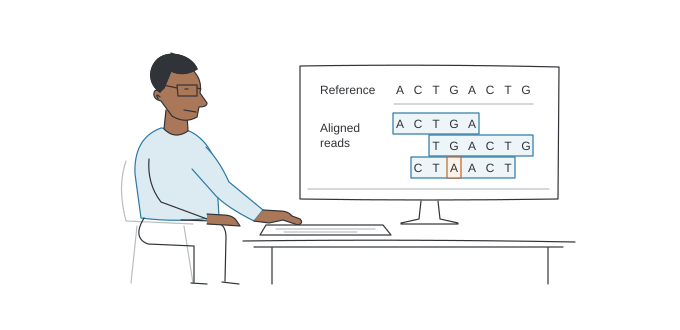

These examples draw on the choices of previous students. Use your programme requirements and discuss your own choices with the programme team.
{kind=link}

What do they do?
A bioinformatician is an expert in analysing DNA. They use their computational skills to compare genomic data from patients to databases to find out what might be the cause of a disease. We need clinical bioinformaticians to interpret DNA sequences to diagnose our patients. Cambridge has a large genomics industry that rely on large numbers of bioinformaticians. Some of these professionals will lecture you on the programme.
What modules are relevant?
A student wishing to pursue a career as a bioinformatician might want to consider the following combination of modules:
GM1 · Fundamentals of human genetics and genomics
GM3 · Omics technologies and their application to genomic medicine
GM11 · Variant interpretation (formerly Bioinformatics)
GM5 · Bioinformatics, interpretation and data quality assurance in genomic analysis (formerly Advanced Bioinformatics)
GM2 · Research and statistical skills for genomic medicine
GM10 · Epigenetics and disorders of the epigenome
GM6 · Application of genomics in infectious disease
One further module that fits the students interest (e.g. cancer or pharmacogenomics)
Research Project (computational focused)